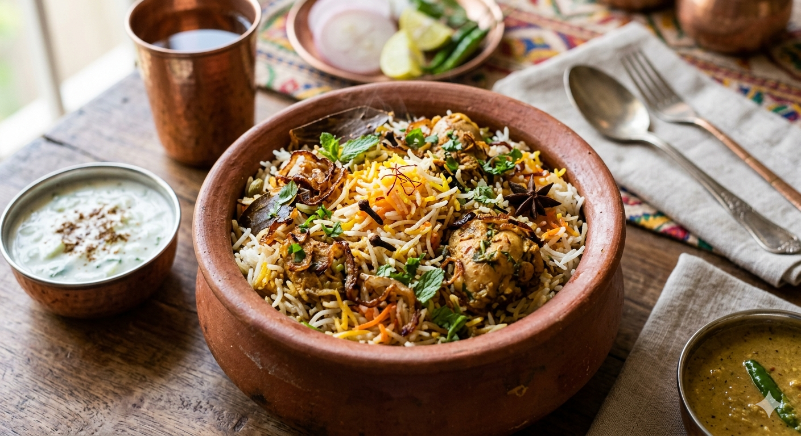

Chiken Biryani

Ingredients
- Chicken: 750g (bone-in, cut into medium pieces)
- Yogurt (Curd): ½ cup (fresh, not sour)
- Ginger-Garlic Paste: 1½ tablespoons
- Green Chilies: 3-4 (slit)
- Spices: 1 tsp red chili powder, ½ tsp turmeric, 1¼ tbsp biryani masala
- Herbs: 2 tbsp chopped mint leaves, 2 tbsp chopped coriander
- Fried Onions (Birista): ½ cup (crushed)
- Lemon Juice: 1 tablespoon
- Oil/Ghee: 2 tablespoons
For Cooking Rice:
- Basmati Rice: 1½ cups (aged, soaked for 30 minutes)
- Whole Spices: 1 bay leaf, 4 cardamoms, 4 cloves, 1 cinnamon stick
- Shahi Jeera (Caraway seeds): ¼ teaspoon
- Salt: 1½ tablespoons (the water should taste salty like sea water)
For Layering:
- Saffron: A pinch soaked in 2 tbsp warm milk
- Ghee: 1½ tablespoons (melted)
- Extra garnish: Remaining fried onions, fresh mint, and coriander
Step-by-Step Instructions
Marinate the Chicken
In a large bowl, mix the chicken with all the marination ingredients. Massage the spices well into the meat. Cover and let it rest in the refrigerator for at least 2 hours (overnight is best for maximum tenderness).Par-Boil the Rice
Bring a large pot of water to a rolling boil with the whole spices, shahi jeera, and salt. Add the soaked basmati rice. Cook for exactly 6-7 minutes until the rice is 70% cooked (it should still have a firm bite in the center). Drain the water completely. Layer the Biryani
In a heavy-bottomed pot (handi), add the marinated chicken as the bottom layer. Spread the par-boiled rice evenly over the raw chicken. Top the rice layer with the saffron milk, melted ghee, fried onions, and fresh herbs. Dum Cooking (Steaming)
Seal the rim of the pot tightly with aluminum foil or wheat dough, then place a tight lid on top to trap the steam. Cook on medium heat for 5 minutes, then place a flat iron tawa (griddle) underneath the pot. Lower the heat to the absolute minimum and let it steam (Dum) for 20–25 minutes.Rest and Serve
Turn off the heat and let the pot sit undisturbed for 10 minutes. Carefully open the lid, gently fluff the colorful layers from the side of the pot using a saucer or fork, and serve hot with a side of cool raita or mirchi ka salan.